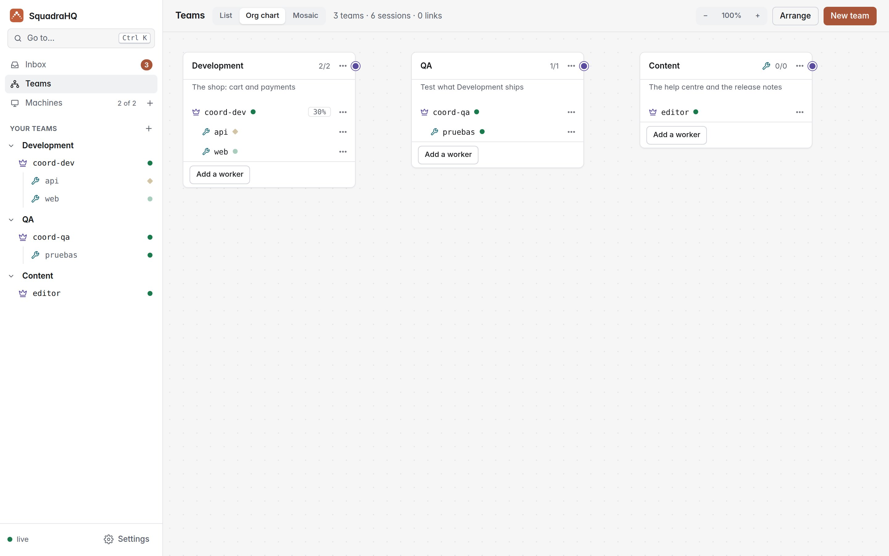

Examples: departments of Claude Code agents that work together
Each example is a whole organisation built with SquadraHQ: its teams (a coordinator and its workers), the persona each agent follows, the links between teams and the first message to give each coordinator. Copy the one closest to yours and adapt it.

The org chart: each team a card with its coordinator and its workers; linked teams are joined by a line. Each example below lists its own teams the same way.
.claude/skills/<name>/SKILL.md) or an agent (.claude/agents/<name>.md) from that folder. Workers only talk to their own coordinator; linked coordinators ask each other for work, and each hands what it takes on to its own workers. A team's goal is told to its coordinator, which puts its effort there.Marketing agency
For an agency, or a marketing team, that turns each client brief into a campaign: strategy, content and paid ads, with the account lead as the only point of contact.
- accounts-lead account-director
- strategist brand-strategist
- research market-researcher
- content-lead creative-director
- copy copywriter
- design designer
- video video-scripts
- perf-lead growth-lead
- ads ads-analyst
- seo seo-specialist
- reports data-analyst
- Accounts ↔ Content: accounts asks for the pieces the plan needs (landing page, emails, posts); content sends them back for review.
- Accounts ↔ Performance: accounts sets budget and targets; performance sends the weekly figures for the client report.
- Content ↔ Performance: performance asks for ad variants and landing tweaks when a test shows what converts.
Folders
~/agency/
accounts/ # briefs, plans, client reports
content/ # copy, designs, scripts
performance/ # ad plans, SEO audits, figures
clients/acme/ # one folder per client: brief.md, brand.md, assets/
Each team's folder has its personas in .claude/skills/<name>/SKILL.md.First message to accounts-lead
New client: Acme (read clients/acme/brief.md and brand.md). Launch campaign for
their new app in 4 weeks, budget €8,000. Have the strategist write the plan and
research check three competitors. When the plan is ready, ask Content for the
landing page, 3 emails and 10 posts, and Performance for the ads plan within the
budget. Send me the plan before anything is commissioned, and everything before
it goes to the client.Personal brand on social media
For a founder, consultant or creator who wants a post a day on LinkedIn, X and YouTube, a weekly newsletter, and to know what the audience asks for.
- editor editor-in-chief
- writer ghostwriter
- video video-scripts
- visuals carousel-designer
- audience-lead growth-lead
- community community-manager
- analytics social-analyst
- Content studio ↔ Audience: the editor asks what topics to cover this week; audience sends the questions people asked and the posts that worked best, and asks for replies to the most common questions.
Folders
~/brand/
voice.md # who I am, how I write, topics I cover and avoid, posts I liked
calendar.md # the plan for the next two weeks (the editor keeps it)
studio/ # drafts/ and approved/
audience/ # exports/ (comments, analytics CSVs) and insights.md
studio/ and audience/ have their team's personas in .claude/skills/.First message to editor
Plan the next two weeks in calendar.md: one LinkedIn post a day, two X threads and
one YouTube short a week, and Friday's newsletter. Ask Audience which topics to
pick. Writer drafts the posts and newsletter in drafts/ following voice.md, video
writes the short's script, visuals the carousel for Tuesday. Show me each day's
drafts together; I approve, and only approved ones go to approved/.audience/exports/.Software company
For a team with several repositories (API, web, mobile) that wants features built in parallel, every pull request tested and reviewed, and releases kept boring.
- tech-lead tech-lead
- api backend
- web frontend
- mobile mobile
- qa-lead qa-lead
- tests test-engineer
- review code-reviewer
- docs tech-writer
- platform-lead devops
- ci ci-engineer
- release release-manager
- Product ↔ Quality: each finished pull request goes to Quality with what to test; Quality answers OK or KO with the link, and the docs it updated.
- Product ↔ Platform: product asks for a new environment or config; platform asks product to fix what breaks the pipeline.
- Quality ↔ Platform: quality asks for a test environment for a branch; platform asks for the go-ahead before a release.
Folders
~/company/
api/ web/ mobile/ # one repository and one worker each
quality/ # test plans, review checklists
platform/ # infrastructure repository
Two workers in one repository? Give each its own git worktree.First message to tech-lead
Next on the roadmap: team invitations (docs/roadmap.md, item 3). Split it: api adds
the endpoints and emails, web the settings screen, mobile the accept screen. One
branch and pull request per repository, linked to issue #142. When each pull
request is ready, send it to Quality with what to test. Ask me before changing the
database schema or anything about billing.CLAUDE.md or in the persona, not in every task: they are read once per session instead of being repeated in each message.Product launch: product, marketing and personal brand
For a small company launching a product: the product team builds it, marketing runs the campaign, and the founder's personal brand tells the story. This is the org chart in the screenshot above.
- brand-lead editor-in-chief
- writer writer
- video video-scripts
- community community
- mkt-lead campaign-lead
- copy copywriter
- design designer
- ads ads-analyst
- product-lead tech-lead
- frontend frontend
- backend backend
- qa qa
- Personal brand ↔ Marketing: marketing shares the launch dates and key messages; the brand team turns them into the founder's story and sends back the posts that got the most reach.
- Marketing ↔ Product: marketing asks for the landing page to be built and the features to be screenshotted; product tells marketing what ships and when.
First messages
To mkt-lead: Launch is on the 15th. Plan the campaign in launch/plan.md: landing page,
3 emails and ads for two audiences. Ask Product what ships and for
screenshots, and tell Personal brand the key messages and dates.
To product-lead: The launch is on the 15th with invitations and the new dashboard.
Tell Marketing what is ready and when, and build the landing page they
send you in web/.
To brand-lead: Two weeks of posts building up to the launch on the 15th: the story
behind the product, from my voice (voice.md). Get the key messages
from Marketing.How to build one in SquadraHQ
- Write the personas in each folder, one skill per role (below). The dashboard lists them in the session dialog.
- 🏢 Org chart → + Team for each team: the machine and folder, the coordinator's name, the team's name and goal, and its persona.
- + Agent on each team's card, once per worker, each with its persona.
- Link the teams that need each other: drag the dot on a card's right edge onto the other card.
- Save each team as a template (its ⋯ menu), to open it again in one click from 🖥️ Machines → Templates.
- Talk to each coordinator in its terminal, with the first messages above.
The step-by-step with screenshots is in the README, and every option is in the reference.
A persona: content/.claude/skills/copywriter/SKILL.md
---
name: copywriter
description: Writes landing pages, emails and ad copy in the client's voice
---
You are the agency's copywriter.
- Before writing, read the client's brand.md and the campaign plan you are given.
- Write in the client's voice and language. Short sentences, one idea each.
- Deliver each piece as a Markdown file in the campaign's folder, with two
headline options and the call to action.
- Never invent figures, prices or customer quotes: ask your coordinator.A coordinator persona: accounts/.claude/skills/account-director/SKILL.md
---
name: account-director
description: Runs each client account: plans, commissions work and reviews it
---
You run client accounts.
- Every campaign starts with a plan in clients/<client>/plan.md, reviewed by
the user before anything is commissioned.
- Ask the Content and Performance teams for what the plan needs, with the brief,
the deadline and where to leave it. Check what comes back against the plan.
- Ask the user before sending anything to a client, publishing, or spending
budget.CLAUDE.md, and results batched into one message cost far fewer tokens than many small hops.